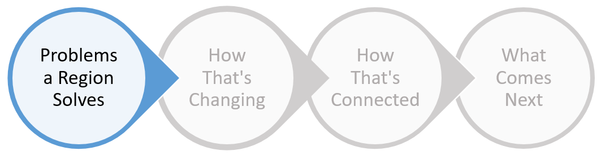

<div id="local-page">
  <div id="local-container">
    <div id="local-wrapper">
      <!-- please put new content into below ... -->

      <div class="process-step-wrapper">
        <h1 class="process-step">1b) Activity in Local industries</h1>
        
      </div>
      <br>
      <p class="process-explanation">Not only do Local industries provide the majority of jobs, but sometimes the unique characteristics of a region turn
        a Local industry into a Traded industry. For these reasons, we need to monitor employment activity in Local industries
        compared to what we would expect. Because these industries should grow or shrink relative to the number of employees
        in the region, we expect that they should have a Relatize Size (RS) around 1. The visualization below shows the Top
        10 and Bottom 10 industries above/below an RS of 1. You can also use the table to check other industries. If you've
        ever asked yourself whether your region should be creating more jobs in a Local industry, looking at the industry's
        RS helps answer that question. </p>
      <br>

      <div class="hed-dek-wrapper">
        <h1 class="hed">How
          <span class="city"></span>'s Local industries compare to what we would expect</h1>
        <h3 class="dek">Difference in number of employees from average size nationally</h3>
        <div class="dropdown-wrapper">
          <div class="dropdown-visible">
            <div class="dropdown-text">
              <span class="dropdown-value">Meridian</span>
              <i class="fa fa-angle-down" aria-hidden="true" style="margin-left:5px;"></i>
            </div>
          </div>
          <div class="dropdown-hidden" style="visibility:hidden;">
            <p class="dropdown-item" data-value="Meridian">Meridian</p>
            <p class="dropdown-item" data-value="Austin">Austin</p>
            <p class="dropdown-item" data-value="Tupelo">Tupelo</p>
            <p class="dropdown-item" data-value="Detroit">Detroit</p>
          </div>
        </div>
      </div>

      <div id="local-bubble-wrapper">
        <div id="local-bubble-legend">
          <div>
          </div>
        </div>
        <div id="local-bubble-scale">
          <div>
            
            <p>Size by # Employees</p>
          </div>
        </div>
      </div>

      <div id="local-table-wrapper"></div>

      <!-- please put new content into above ... -->
    </div>
  </div>
</div>